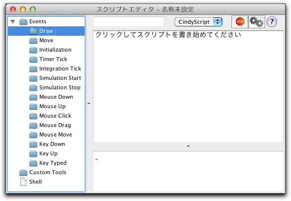
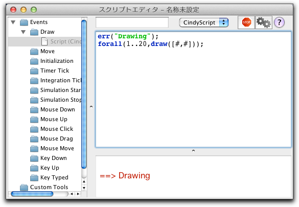
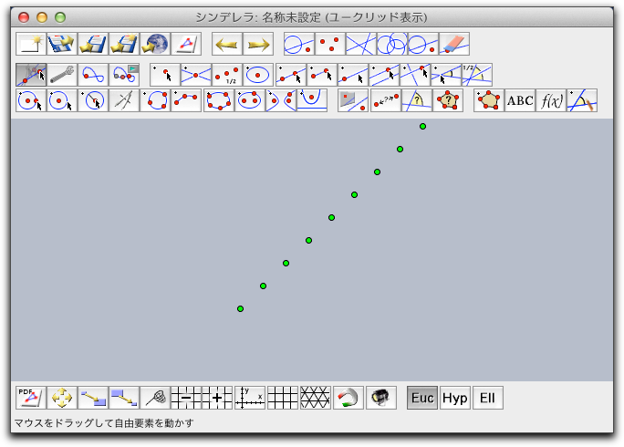
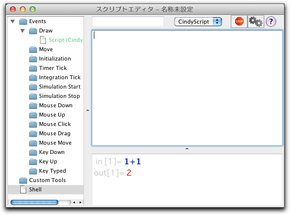
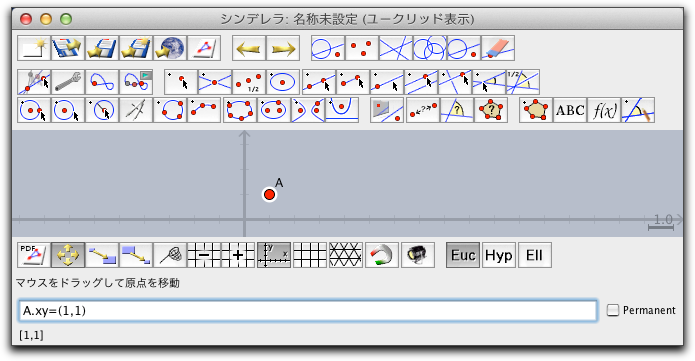
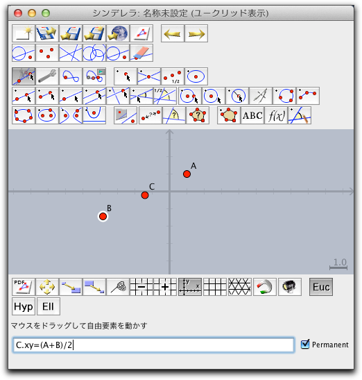
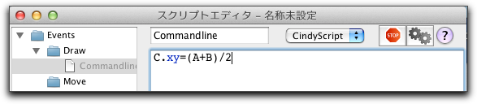
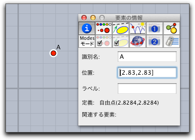
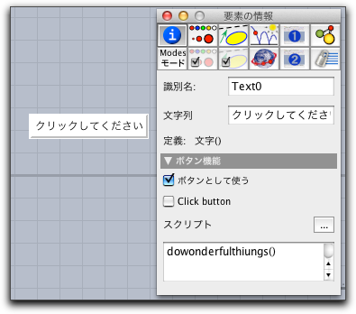

CindyScriptコードの入力
CindyScript エディタ
CindyScript のスクリプトエディタはメニューの スクリプト/CindyScript から起動します。ここでは、スクリプトエディタの使い方を簡単に説明します。
入力ウィンドウ
 |
| スクリプトエディタ |
スクリプトエディタには３つのパーツがあります。左側にはスロットとその中のスクリプトについてツリー上に表示されています。右側には、スクリプト名を入力するフィールドと、プレイボタン、ストップボタン、ヘルプボタンの下に、スクリプトを書くおおきなテキストエリアと、スクリプトからの出力を表示するエリアがあります。
スロット
シンデレラは高度にインタラクティブですが、それは CindyScript のコマンド(命令文)に適した多くの"実行場面"が用意されているからです。スクリプトエディタの左側には利用できる場面が表示されています。これをスロットともいいます。
通常は、"Draw" スロットを使います。表示画面に図が描かれるときにはいつでもここに書かれたスクリプトが実行されます。スクリプトを書くために、まず "Draw"スロット(フォルダアイコン)をクリックしてください。
 |
| drawスロットにスクリプトを書く |
テキストエリアに "クリックしてスクリプトを書き始めてください"と表示されます。テキストエリア上でクリックしてテキストを書き始めます。
err("Drawing");
forall(1..20,draw(#,#
 |
実行ボタン(歯車アイコン)を押すと、スクリプトによって作られた緑色の点が表示画面に斜めに表示されるのがわかるでしょう。
 |
それぞれのスロットの役割は次の表のようになっています:
| スロット | 実行される機会 | 注 |
| Draw | 表示画面が書き換えられるとき | |
| Move | 要素が動いたとき | 要素が動くときいつも表示画面が書き換えられるわけではありません。したがって、MoveはDrawより頻繁に実行されます。 |
| Initialization | 他のスクリプトより前に一度だけ実行 | スクリプトが変更されたり、図の要素が追加／削除されたときだけ実行されます。 |
| Timer Tick | 定期的に | |
| Integration Tick | 定期的に | |
| Simulation Start | シミュレーション(アニメーション)の開始時 | |
| Simulation Stop | シミュレーション(アニメーション)の停止時 | |
| Mouse Down | マウスボタンが押されたとき | |
| Mouse Up | マウスボタンが離されたとき | |
| Mouse Click | マウスがクリックされたとき | |
| Mouse Drag | マウスがドラッグされたとき | |
| Key Typed | キーボードが打たれたとき |
シェル
CindyScript のコマンドを入力してすぐに実行することができます。いま、"Shell" スロットを選び、テキストエリアに命令を入力してみましょう。たとえば、「1+1」と入力してシフトキーと enter(return) キーを同時に押すと入力した命令が実行され、下のエリアに in-
 |
コマンドライン
CindyScript の命令を直接使って幾何要素を操作したりできると便利です。前述のようにシェルウィンドウを使うほかに、描画面のコマンドラインを使って短い命令を実行することができます。そのためには、メニューの「スクリプトーCommand Line" を選びます。あるいは、キーボードのショートカットを用いて Ctrl-Enter (Windows and Unix) あるいは CMD-Enter (Mac OS X) を押すとコマンドラインが表示されます。
 |
| コマンドラインを使って点を移動した |
任意の CindyScript の命令を打ち込んでEnterキーを押すと実行され、コマンドラインはクリアされます。 Shift+Enter を押した場合は、実行後もコマンドラインはクリアされません。似たような命令を試したいときや、正しい構文を試行錯誤したいときに使えます。
コマンドラインの右にある permanent-チェックボックスをチェックすると、実行したコードはDrawスロットに書き込まれ、描画面が書き換えられるたびに実行されます。スクリプトエディタを開いて、Drawスロットを開けば、編集ができます。
簡単な例として、点Ｃを常に２点ABの中点に置く方法を示します。３つの点をとり、コマンドラインを開いて、
C.xy=(A+B)/2 と打ち、 permanent チェックボックスをチェックします。 |
| permanent チェックボックスの使い方 |
Enterキーを押すと、点 C は A と B の中点に移動し、 A か B を移動しても常に中点にあります。スクリプトエディタのDrawスロットを開いて、命令文が自動的に移ったことをを確かめてください。
 |
| 自動的に command line のスクリプトが作成された |
CindyScript とインスペクタ
インスペクタのテキスト入力フィールドにかかれたコードは CindyScript のコードと認識されます。そのスクリプトは一度だけ実行されますので、常に実行したい場合は、コマンドラインかスクリプトエディタに書かなければなりません。Enterキーを押した後も、コードはまだそこに書かれたままですが、その後の結果によっては入力フィールドの内容も書き換えられます。
 |
| インスペクタでCindyScript の命令を使う |
クリック可能ボタン
文字オブジェクトは、インスペクタの ボタンとして使う ボックスをチェックするとクリックでボタンとして働くようにすることができます。 CindyScript のコードを書いて、ユーザーがクリックしたらその機能が働くようにできます。スクリプトを書くスペースは小さいので、inititalization スロットに書いて呼びだすこともできます。
 |
他の言語
上のドロップダウンメニューで、スクリプトを記述する言語を選ぶことができます。利用できる言語は Python と、図形を保存するために用いられている内部言語である CDYです。ただし、現在のところは、CindyScript だけが使えます。
 |
Page last modified on Thursday 08 of March, 2012 [09:43:28 UTC].
The original document is available at
http://doc.cinderella.de/tiki-index.php?page=The%20CindyScript%20EditorJ